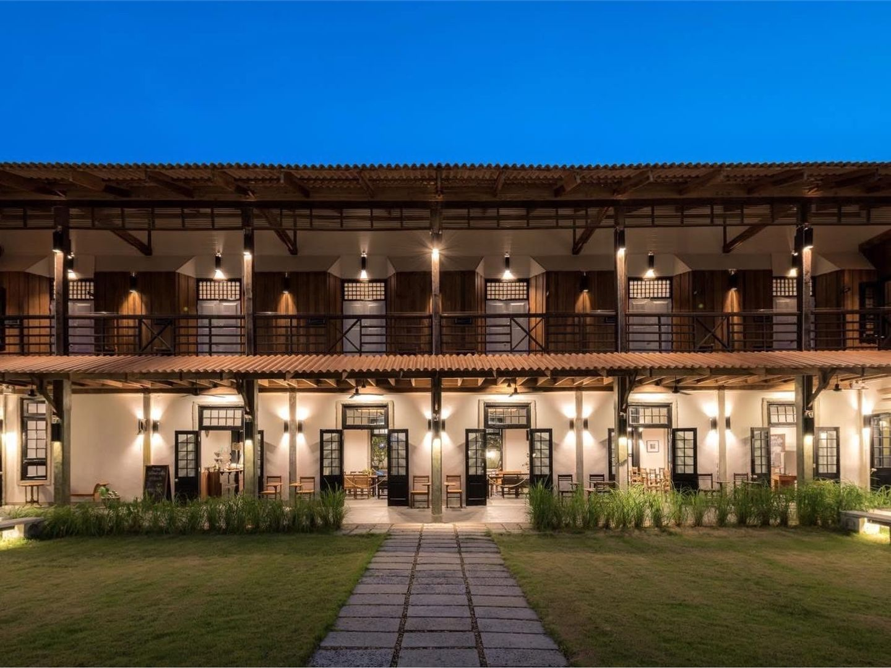
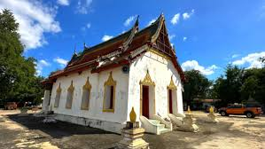
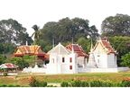
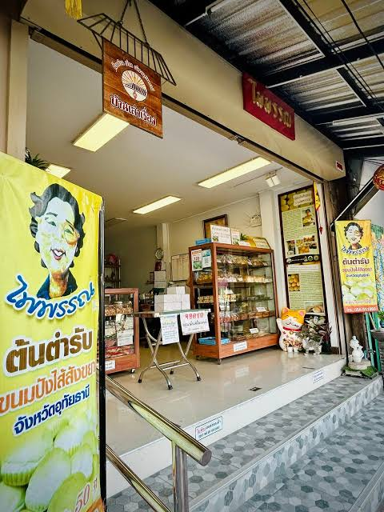
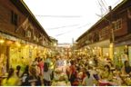
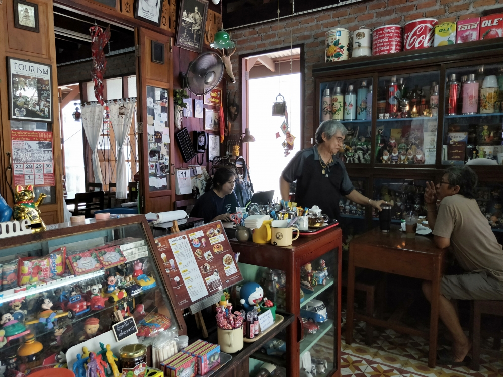

เส้นทางเดินและปั่นจักรยานชมเมืองอุทัยธานี
สัมผัสวิถีชีวิต ชุมชน และเรื่องราวริมแม่น้ำสะแกกรัง จากโรงแรมอุไทย เฮอริเทจ
เส้นทาง (Route)
01
โรงแรมอุไทย เฮอริเทจ

Uthai Heritage Hotel
จุดเริ่มต้น
02
วัดพิชัยปุรณาราม

Wat Pichai Puranaram
จากโรงแรมเดินมายังวัดพิชัย
แล้วเดินต่อไปยังทางเดินริมแม่น้ำสะแกกรัง
03
ตลาดเช้าริมแม่น้ำสะแกกรัง
Sakae Krang Riverside Morning Market
เดินเลียบแม่น้ำ สัมผัสบรรยากาศ
และวิถีชีวิตยามเช้าของชุมชน
04
วัดโบสถ์

Wat Ubosatharam
ข้ามสะพานวัดโบสถ์
แล้วเดินชมพื้นที่ชุมชนฝั่งแม่น้ำ
05
ร้านขนมปังไพพรรณ

Paiphan Bakery
ข้ามสะพานกลับ แล้วเดินต่อไปยังร้านขนมปังไพพรรณ
06
ตรอกโรงยา

Rong Ya Walking Street
เดินต่อเข้าสู่ย่านเมืองเก่า
และสัมผัสบรรยากาศชุมชนดั้งเดิม
07
บ้านจงรัก

Ban Jongrak
เดินต่อบนถนนศรีอุทัย